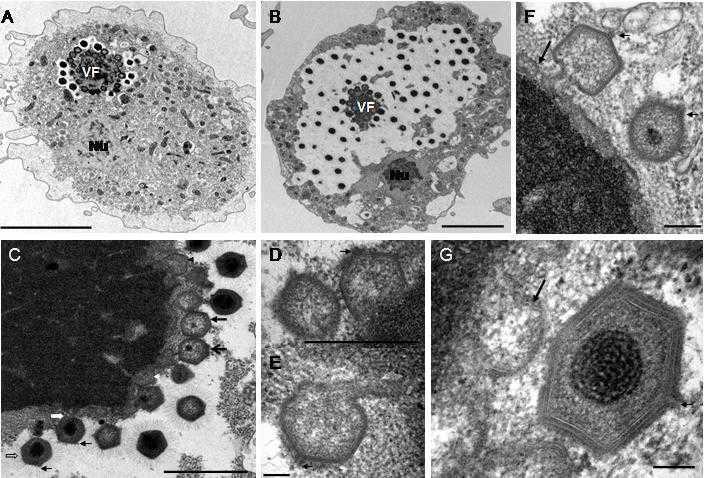

噬菌体侵染细菌，是不是自杀？
作者：赵泠 - 知乎
原问题：噬菌体侵染细菌就为了把DNA注入进去，自己不就死了，这种生物对活着没有追求吗？
噬菌体是病毒，属于“非细胞生物”，其构造跟动植物有很大的区别。“把 DNA 注入进去”不但不是“自己不就死了”，反而是“病毒开始表现出生命活动”的标志。
人们经常将病毒颗粒当做病毒的本体，那是不太准确的。病毒表现生命活动的形式是在宿主细胞或特定的无细胞培养体系内形成的病毒工厂。病毒颗粒是病毒工厂相关的信息载体和辅助元件组成的，承载信息的核酸在蛋白质外壳帮助下进入宿主细胞并脱离外壳，跟你“在衣服帮助下穿过风雪走进屋里并脱掉衣服”没多大区别——当然，区别还是有的，你是一个个体，而病毒核酸不是，病毒工厂比病毒颗粒或单独的病毒核酸更符合个体的定义。
在这方面，RNA 病毒比噬菌体更明显。RNA 病毒的核酸经常是分裂为多个区段（多条 RNA 分子）的状态，感染所需的区段不必都装在同一个核衣壳里，多个病毒颗粒一起进入宿主内部后协作即可。
病毒工厂在细胞里的样子：

人们描述病毒的行为时来几句“为了如何如何”看起来比较容易理解，但这之中暗示的目的性容易让人误以为病毒有意志地搜寻并攻击宿主——实际上它们只是随波逐流。
看起来，提问者假定生物对“活着”有追求，推测生物的行为不应包含“自己不就死了”的要素，然后遇到了似乎跟预测不符的现象，就有了这种题目。
绝大多数生物并没有所谓“对活着的追求”，被人们阐释为“为了生存”的各种行为要么是后天习得的，要么在演化上可以归因于“在远古时，会自然地做出这种行为的个体生存下来并将相关性状传给后代”。只要不造成携带者灭绝，“在繁殖过程中或那之后弄死自己”的性状就可以持续传递，在软体动物、蜘蛛、昆虫、鱼之中，你都能找到一些物种的雄性个体在交配后迅速死亡，雌性在产卵后迅速死亡或守卫卵到孵化后死亡。
称归因于演化的那部分为“本能”对此毫无改善。生物学上的“本能”是动物行为学的概念，对非动物的生物是不适用的，在动物身上的存在也受到质疑。
类似地，“雄螳螂/雄蜘蛛会在交配后心甘情愿被雌性当食物吃掉”是人们的一厢情愿，在自然界有这种行为的物种并不多，而且雄性会在交配前小心安抚雌性或献上食物、在交配后迅速逃走，被捉住吃掉的并不多。雌性的这种行为可能简单归因于“这些动物会攻击自己看得到的体型小于自己的潜在食物，而其雄性的体型小于雌性”。在体型相似的情况下，某些蜘蛛的雄性会在交配开始前或过程中突然杀死雌性而停止交配，通常发生在该雌性比自己老一代或更多的情况下——这大抵源于“这些动物会攻击看起来比自己弱的潜在猎物”，相关性状没有导致携带者产生的可育后代数量特异地减少，还可能在一定程度上有助于“优生优育”。
你可以看看老鼠为了跑轮玩死自己的事（按：一个生物实验，一个拉杆可以刺激小鼠大脑的多巴胺分泌，小鼠会推拉拉杆不吃不喝致死 ），再考虑一下历史上和现实中为了从崇高到卑微的各种理由死去的人们。